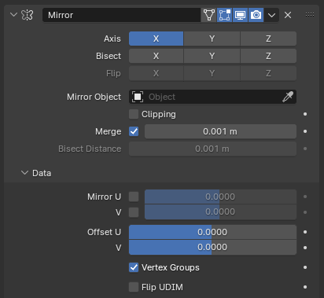

Lesson 7: Mirror modifier
What Mirror does
Most real objects are symmetric, like a mug, a helmet, or a logo shape. The Mirror modifier copies your geometry across an axis, so you only model one half. A modifier is a setting that changes the object without changing the original mesh. You can turn it off or change it at any time.

Image: Blender Manual by the Blender Documentation Team, licensed under CC BY-SA 4.0. Shared unchanged.
Steps
- Tool Add a cube: press Shift + A, then Mesh > Cube. menu path unverified in 5.2.1
- Key Press Tab for Edit Mode, then 1 for vertex select.
- Mouse Rotate the view with Cmd + drag until the left side of the cube faces you. Hold the left mouse button on empty space and drag a box around the four corners on that side. Release.
- Key Press X and choose Vertices. The left side is gone. the delete menu label is unverified in 5.2.1
- Key Press Tab to return to Object Mode.
- In the Properties panel, click the blue wrench tab (Modifiers). Click Add Modifier, then Generate > Mirror. The button is at the top of the Modifiers tab, per the manual.
- Check A full cube appears again, with both sides matching. The Axis X button is blue.
- Key Press Tab for Edit Mode. Click a corner on the right side, press G, and move it. Click to confirm.
- Check The left side moved too. Blender copied your change across the middle.
Why the cube looks cut in half at first: the mirror copies only the geometry that exists. Your remaining half is copied to the other side. The Merge setting joins the seam in the middle.
Project: mirror block
A symmetric block made from one half. Start from a new cube, delete one side, and mirror it. Save as mirror-block.blend.